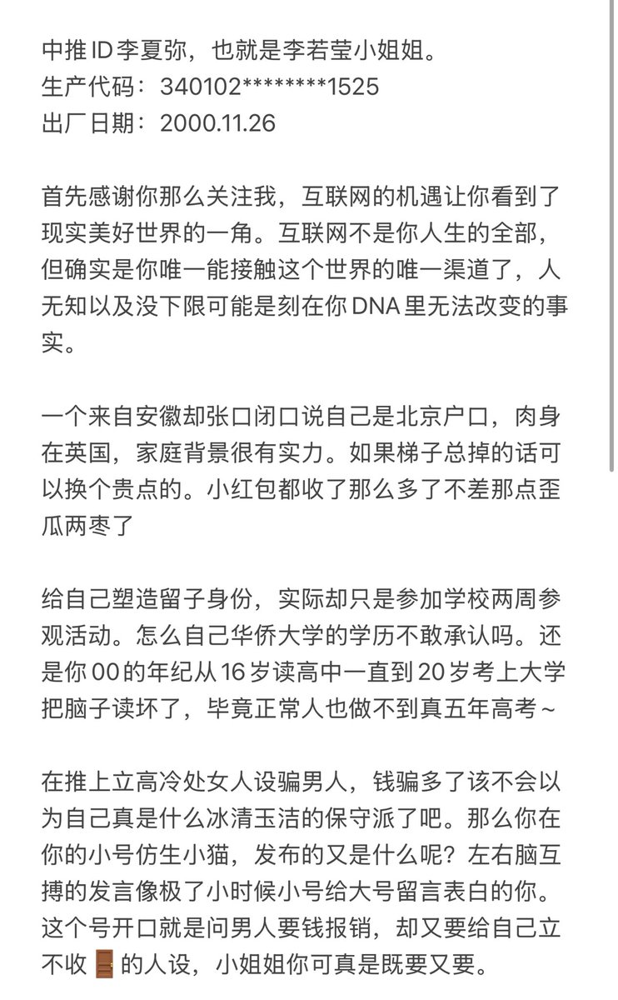
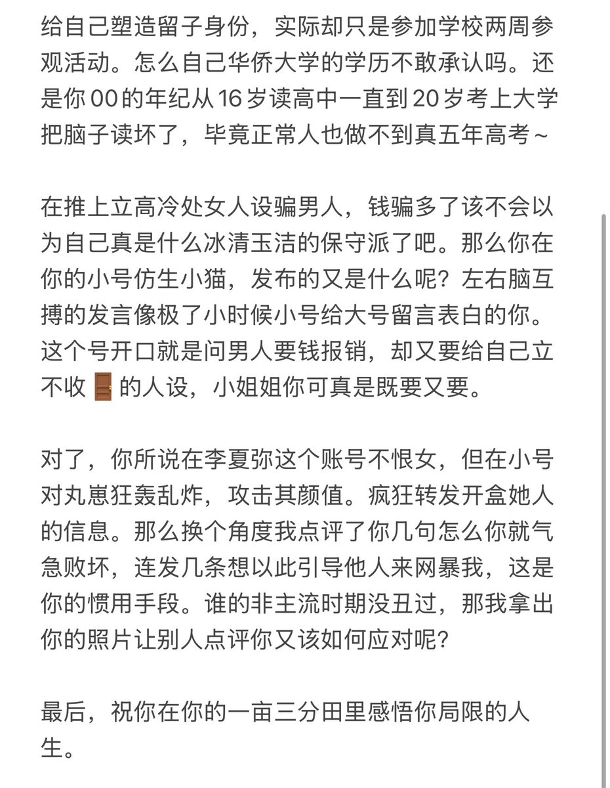

泉此方
@ci_shang85157
@AZ_0w0 @SummerRing41 太有意思了


AZ.
@AZ_0w0
首先我知道有很多抱着吃瓜心态 还有站队的人 如果今天这个瓜能让你们开心一下 也是值得了 站队的人气急败坏也没用 毕竟李若莹也不是你爹你娘那么舔她 出事了她一毛也不会给你掏的 互联网终不是你们的归宿 人还是得回归现实 @SummerRing41 要说的都在图里 评论+转发我抽三个顺眼的发🧧 50 150 200 https://t.co/XXn26cwdGe